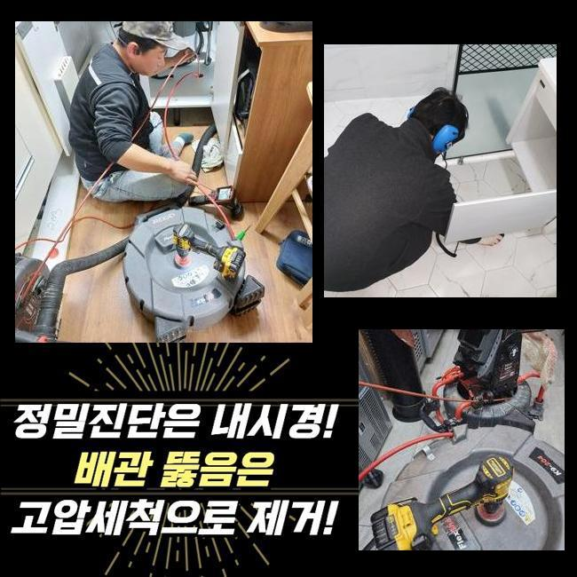
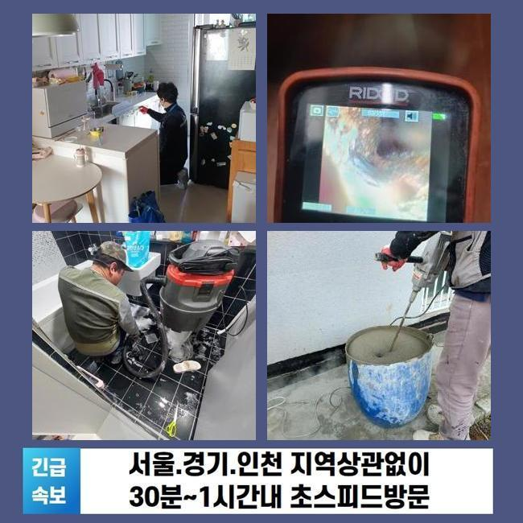
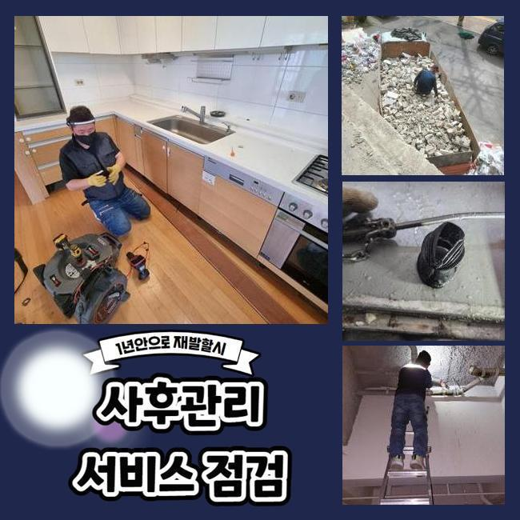
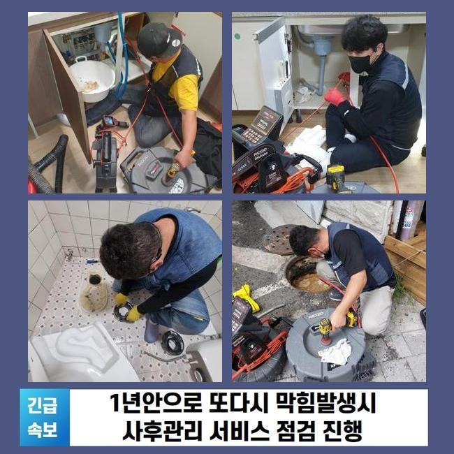
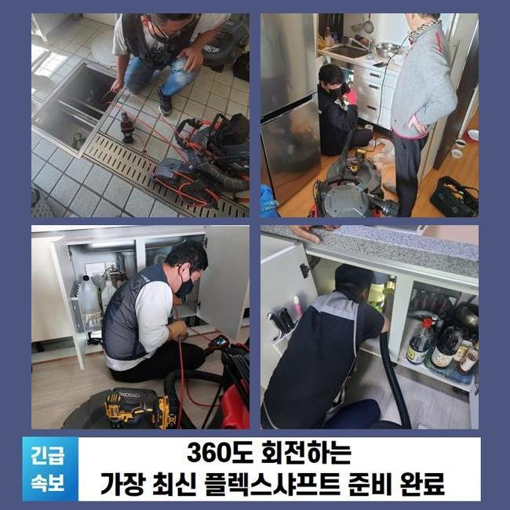
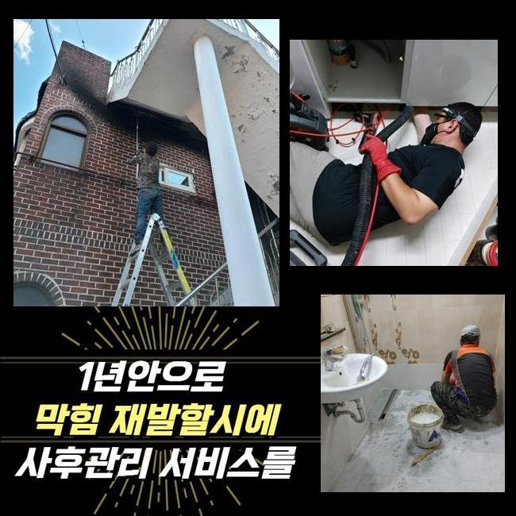
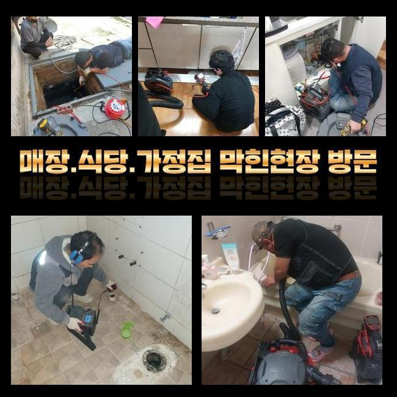

🏠 세마동화장실막힘 초평동 하수구청소 배관공사
용인 세마동 싱크대막힘 전문 시공 후기

📋 작업 개요
- 위치: 용인 세마동, 세마동, 용인
- 서비스 유형: 싱크대막힘, 변기막힘, 하수구막힘, 배관막힘, 누수수리, 역류해결, 배관청소, 고압세척, 설비공사, 악취차단
- 작업 일시: 2025. 1. 17. 22:23
- 업체명: 하수구수사대 (010-5615-2118)
🔍 문제 상황
세마동화장실막힘 초평동 하수구청소 배관공사
하수 방출이 이뤄지지 않는다면 여러가지의 어려움을 당할 수 있습니다
가장 흔한 사건이라 함은 한 집 안의 싱크대가 틀어막혀버려서 계속 물이 차오르는 상황들도 많고 화장실 안의 양변기나 베란다 공간에 물이 쌓여서 이용에서의 어려움이 도래할 수 있는 부분입니다
공동주택 거주자에게서 요청이 들어온다면 세대 내의 문제라고 보고 집안에서 여러 기기를 돌려서 해소합니다
굵은 메인배관의 경우에는 아파트의 경우라면 결함이 없는지 검토하기 위하여 일정 시기마다 정화작업을 시행하므로 여기가 다치는 것은 상대적으로 적습니다
영업장이 자리한 빌딩이면 하수 문제가 나타날 가능성도 아파트와 비교해서는 통계적으로 많기는 합니다
이번 포스팅의 주인공은 상가 건물 속에 있는 메인관이 봉쇄돼서 성업 중인 매장들의 설비를 못쓰게 돼서 얼른 고쳐줘야 하겠다며 저희를 찾아주신 것이었습니다
현장 조사에 돌입해보니 오류가 있다는 게 감지된 메인관의 위치가 파악돼서 진행을 시작했습니다
메인관이 가로막힌다면 호실 안에 포함된 세대 배관을 원인으로 추정하는 것 보다는 공용으로 쓰는 배관에 데미지가 생겼거나 혹은 쓰레기가 들어차서 하수 흐름이 끊어졌을 상황일 때가 많습니다

🔎 원인 분석
💡 전문가 진단: 정밀 진단 장비를 사용하여 슬러지의 고착 여부를 판명하고 타격/세척 작업을 실시했습니다.
많은 양의 하수가 모여드는 관로부터 통로를 내고 완성되면 소규모의 파이프 내까지 정화합니다
천장 속에 설치된 시설물이었기 때문에 고공사다리를 두고 수리를 해주기로 해서 차단된 하수구 설비의 지원을 도울 장비를 옮겨두고 작동시켰습니다
진입부 청소를 완수해도 심층부 영역까지는 수습이 되지 못했으니 메인배관을 수리할 시 파이프라인 전체를 원활하게 풀어내야 합니다
파이프 커버를 개방하고 충분한 여유공간을 확보하여 업무를 이행할만한 활동 영역을 조성했어요
내시경 기기라는 카메라로 문제되는 파이프 안의 상태를 점검해 보았습니다
내제된 오물의 양과 물의 이동을 꽉 막아버렸던 이유가 무엇인지 장비 가동 직전에 판단해야 시공 우선순위를 설정할 수 있게 됩니다
메인배관이 손상을 입었다면 파이프의 사이즈가 대형에 속하기 때문에 전형적 주택에 찾아갔을 때 주로 구동하게 되는 석션기만으로는 처리가 안돼요
노즐 길이가 아래까지 닿지 않기 때문에 흡입력도 다소 뒤떨어집니다
기름 슬러지를 분쇄해서 스케일링하는 기능을 맡고 있는 샤프트기기 마찬가지로 오래 걸리며 구멍을 여러개 타공해야 하니 곤란할 것 같았어요

🔧 작업 과정
상가 속에 있는 하수구 개방이 이뤄지지 못하면 빠른 세정에 들어가서 안정화를 시켜줘야 합니다
통쾌한 물살을 쏘면서 여러 구간에 확산된 오물들을 시원하게 빠져나갈 수 있게끔 세정해서 배수로 안을 걸림돌없이 만들어야 수시로 봉인되는 일들을 다스릴 수 있게 됩니다
하수구 안이 풀이라면 말끔한 청소작업이 아무래도 곤란을 빚을 수 있으니 먼저 스프링 기기가 닿이는 가장 밀집도가 높은 섹션을 집중 타격해서 순환이 되도록 조성한 후에 말끔한 하수구 청소를 나아가기로 했습니다
장비를 정확하게 배치하려면 슬러지 축적이 과한 쪽에 전과는 다르게 개방된 경로를 확보했습니다
이번 작업장소인 상가는 여러 종류의 식당 매장들이 성황리에 운영 중이었고 설거지하며 흘러간 기름기가 대량으로 배출되고 누적되어서 관로 위에 굵은 유막이 뿌옇게 뒤덮여 있었습니다
기름막은 뜨거운 물을 써도 개선될수 없기때문에 찌꺼기가 한참 됐다면 석회물질로 변해서 딱 달라붙게 되는 장애물이 되고 맙니다
제때 하수구 스케일링을 해주지 않고 이물질이 모이도록 허락하면 차곡차곡 관로를 메우다가 규모가 더 확대되면서 이동이 불가하도록 꽉 메워져서 물의 흐름이 영영 발생하지 않게 봉인됩니다
유분기가 많은 기름기를 조속히 없애는 기법은 고압세척기기이며 분사력 덕택에 간편한 투자로 오염원이 가득 찬 수로를 새것처럼 만들 수 있었네요
끈적하니 엉겨붙은 노폐물이 수압의 타격으로 사라져가는 양상을 배관 내시경을 돌려서 검사하면서 진행해나갔어요
짱돌처럼 단단한데다 사이즈까지 방대한 양의 물질들이 자취를 감추기 시작했으며 미세한 알갱이만 떠다니는 상태로 보였습니다
고압세척 작업을 하면 거의 예외 없이 의심되는 장애요소가 있는 곳들을 두루 긁어내야만 하수를 못쓸 재막힘과 같은 불상사가 일어나지 않습니다
통수를 방해해온 슬러지를 강력한 물줄기로 해체시키고 꾸준히 활용해온 내시경으로 구석구석을 체크하면서 완벽히 개선됐나 확인했어요
초반에 하수구를 관측해봤을 때는 빈틈이 아예 없다싶을 정도로 상황이 나빴지만 여러 장비를 활용한 작업을 거치고나니 더러운 물질이 싹 사라지게 된 말끔한 애프터를 보게 됐습니다
물이 잘 내려가야하니 수도꼭지를 틀어서 물을 흘려보내면서 하수가 유연하게 배출되는 시공 후의 현황을 직접 명백히 짚어본 이후에 시공의 마무리를 안내해드렸습니다


✅ 작업 완료
아까 장비를 배치하기 위해서 타공을 해줬던 구역들은 기록해뒀다가 윗부분을 커버해줄 테이프로 야무지게 커버링해서 누수 상황이 벌어지지 않게 조치를 취했습니다
장기사용으로 결함이 생긴 하수구로 막대한 피해를 입고있던 상가 건물 안에 있는 습한 물기가 고여만 갔고 오염된 잔수의 역류까지 신통방통하게 고쳐드리고 작별을 고하게 됐습니다
사이즈가 남다른 배수로라면 쉬운 방식으로 낫기 어려운 사안이므로 경솔하게 스스로 처리해보려 매달리다가는 파이프에 손상이 가는 경우도 왕왕 있습니다
빌라나 아파트 공동주택을 비롯한 하수관이 복잡한 상가건물일지라도 올바른 원인 규명을 통해서 설비를 순탄하게 가동되도록 해드리니 개선을 해보셨으면 좋겠습니다




⚠️ 베란다 누수 및 방수 관리 방법
- ✅ 비가 많이 올 때 창틀 주변이나 아래층 천장에 얼룩이 생기는지 정기적으로 확인해 보세요.
- ✅ 우수관 주변 실리콘 마감이 들뜨거나 깨진 틈새가 있는지 손상 여부를 수시로 체크하세요.
- ✅ 베란다 바닥 타일의 줄눈(메지)이 소실되면 그 틈으로 물이 침투하여 누수가 유발됩니다.
- ✅ 누수 의심 증상 발견 시 방치하면 아래층 손실이 커지므로 즉시 전문가의 진단을 받으십시오.
💡 핵심 정리
- 확실한 장비 작업(내시경 점검 및 샤프트 스케일링)으로 원인을 뿌리 뽑습니다.
- 작업 후 1년 이내에 동일한 부위 재발 시 100% 무상 A/S 서비스를 보장합니다.
- 서울 · 경기 · 인천 전 지역에 24시간 언제든 긴급 출동할 수 있도록 항시 대기 중입니다.
❓ 자주 묻는 질문 (FAQ)
🚨 용인 세마동 싱크대막힘 문제로 고민이신가요?
정확한 원인 진단과 확실한 시공으로 재발 없는 해결을 약속드립니다.
24시간 긴급 출동 | 서울 · 경기 · 인천 전지역 | 1년 내 재발 시 무상 A/S